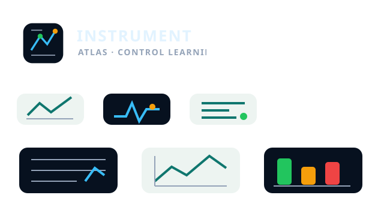

navigation
Role route trace
Product orientation, cockpit, contextual trace, and local tools use one governed route identity.
04layers
06archetypes
2Tthemes

Product orientation, cockpit, contextual trace, and local tools use one governed route identity.
Learner state, confidence, and report readiness appear as evidence snapshots rather than generic metrics.
Local tool chrome, command strips, and task traces use instrument roles instead of page-local controls.
Graph state and data filters retain route identity, evidence status, and inspection tools.
Teacher and administrator actions present status lanes, next action, and governance scope.
Reports and governance snapshots use ledger identity, output state, and watermark roles.